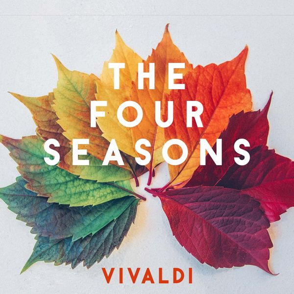
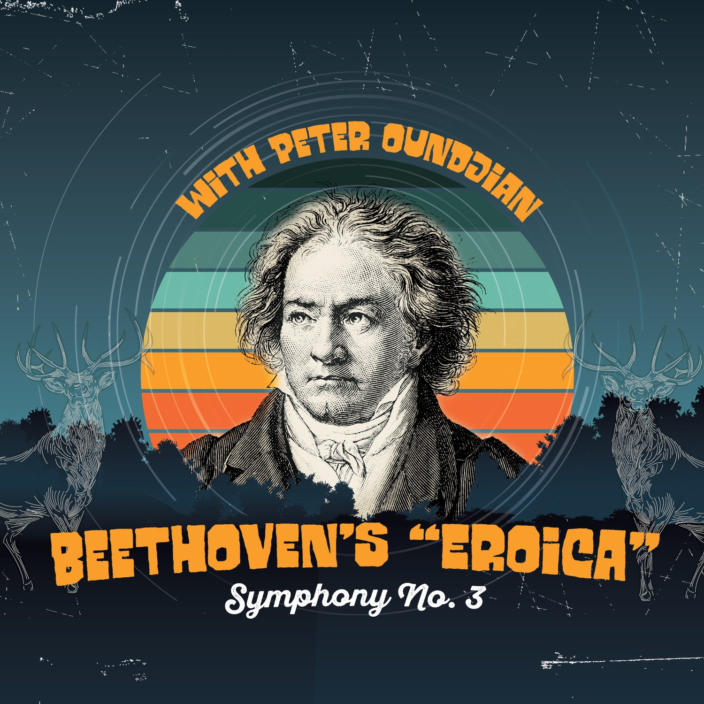
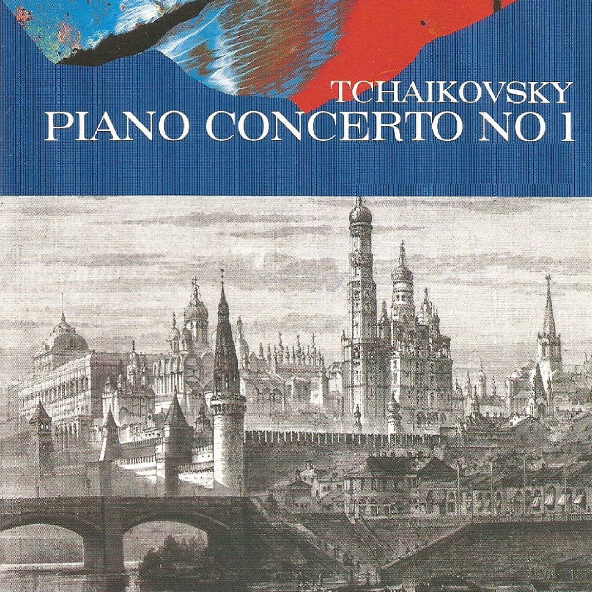
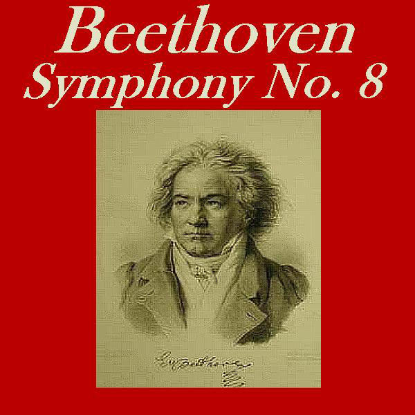
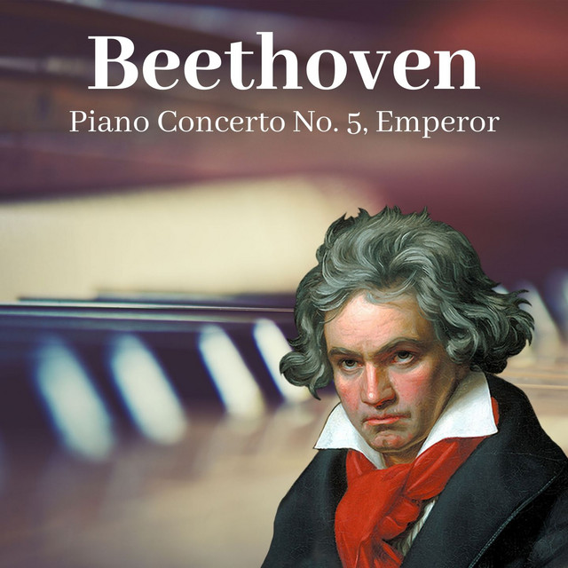
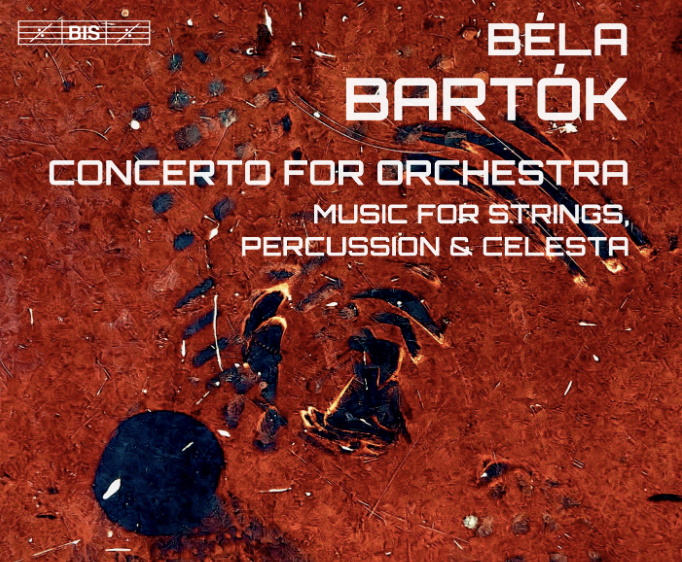
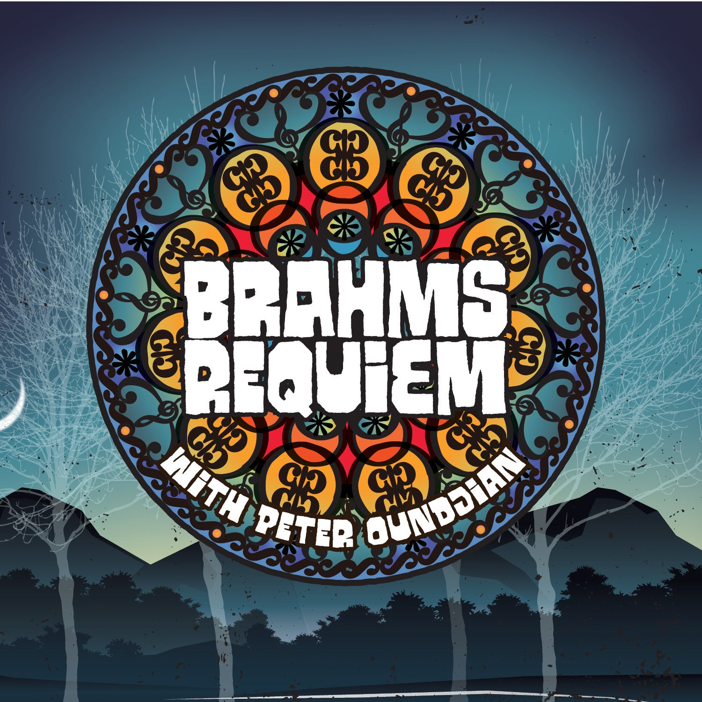
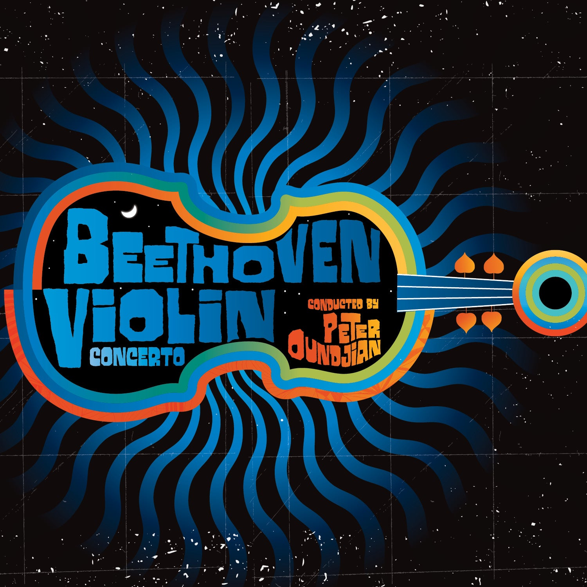

Vivaldi's The Four Seasons
OCT 14-16 FRI-SAT 7:30 SUN 1:00
Symphonic bliss awaits you as your Colorado Symphony and guest conductor Aram Demirjian present a powerhouse program highlighted by Vivaldi’s programmatic masterpiece, The Four Seasons. As striking and admired as ever, this work conjures imagery that deftly captures the essence of spring, summer, autumn, and winter through music that manages to remain strikingly modern three centuries after its debut. Paul Huang is just the virtuoso to embrace this beloved concerto in its return to Boettcher Concert Hall.
The grand finale — Tchaikovsky’s Fourth Symphony — is a meticulously structured meditation on fate that endures as one of his most popular and identifiable compositions. Over four movements, Tchaikovsky transforms his personal battle with fate into one of humanity’s most powerful works of art. Among today’s best and brightest composers, Jessie Montgomery’s Strum draws on the spirit of dance, movement, and American folk expressions in an ecstatic celebration that will have you on the edge of your seat.
Featured Artists
Aram Demirjian, conductor
Paul Huang, violin
Repertoire
- JESSIE MONTGOMERY Strum
- VIVALDI The Four Seasons, Op. 8, No. 1-4
- TCHAIKOVSKY Symphony No. 4 in F minor, Op. 36
Beethoven Symphony No. 3 with Peter Oundjian
NOV 4-6 FRI-SAT 7:30 SUN 1:00
History is replete with turning points and with the completion of his revolutionary Third Symphony, Beethoven forever changed the idea of what a symphony could be. A clear bridging of the Classical and Romantic eras, the Eroica (“Heroic”) Symphony explores what it means to be human in a work that is larger and more emotional than a symphony had ever been before. In it, Beethoven’s passion rises to the forefront, using broad strokes of sound to convey the very nature of humanity, while reimagining a future for music filled with endless possibility. Cellist Sterling Elliott — a 2021 Avery Fisher Career Grant recipient — brings youthful energy to Elgar’s Cello Concerto, a deeply emotional work filled with soaring themes and quiet anguish that will leave audiences entranced. The Colorado Symphony Chorus takes center stage on Vaughan Williams’ Walt Whitman-inspired Toward the Unknown Region, a remarkable marriage of music and text, with Williams’ inspired music perfectly encapsulating Whitman’s noble, humanistic aspirations. These works will spring to life in the hands of Maestro Peter Oundjian and your Colorado Symphony.
Featured Artists
Peter Oundjian, conductor
Sterling Elliott, cello
Colorado Symphony Chorus, Duain Wolfe, director
Repertoire
- VAUGHAN WILLIAMS Toward the Unknown Region
- ELGAR Cello Concerto in E minor, Op. 85
- BEETHOVEN Symphony No. 3 in E-flat major, Op. 55 “Eroica”
Tchaikovsky Piano Concerto No. 1 with Olga Kern
DEC 2-4 FRI-SAT 7:30 SUN 1:00
Peter Ilyich Tchaikovsky — so highly regarded for his symphonic compositions — placed himself among the greats of the keyboard with the completion of his First Piano Concerto. The work is filled with towering grandeur, gorgeously lyrical melodies, and unmistakable Romantic spirit. For pianists, what Everest is to climbers, the Concerto in B-flat has become the standard against which all virtuosos must measure themselves, featuring iconic opening flourishes and a pyrotechnics-filled finale. Denver favorite Olga Kern lends her dazzling technique and innate musicality to this cornerstone of the Classical Canon. Your Colorado Symphony and Conductor Christian Reif — dubbed a “remarkable talent” by the San Francisco Chronicle — conclude the program with Shostakovich’s stormy and brooding Tenth Symphony. Written to symbolize the power of the people, Shostakovich employs memorable themes and complex orchestrations that mirror his own battles against Soviet oppression. Ending on a triumphant note, this is a finale that will leave you breathless.
Featured Artists
Christian Reif, conductor
Olga Kern, piano
Repertoire
- TCHAIKOVSKY Piano Concerto No. 1 in B-flat major, Op. 23
- SHOSTAKOVICH Symphony No. 10 in E minor, Op. 93
Ravel’s Daphnis et Chloé
JAN 13-15 FRI-SAT 7:30 SUN 1:00

Be still my heart! A whirling celebration of pagan love awaits listeners with Ravel's Daphnis et Chloé, which he called a “symphonie chorégraphique” rather than a ballet, reflecting a sense of powerful, dramatic music which defies category and springs to life on terms all its own.
Featured Artists
Kevin John Edusei, conductor
Yumi Hwang-Williams, violin
Repertoire
- BOULANGER D'un matin de printemps
- SZYMANOWSKI Violin Concerto No. 1, Op. 35
- RAVEL Daphnis et Chloé
Beethoven Symphony No. 8
FEB 10-12 FRI-SAT 7:30 SUN 1:00
Beethoven’s Eighth — which he referred to as “my little Symphony in F,”— is the most cheery, joyful, and experimental of his symphonies. Its relatively compact scale allowed Beethoven to be more imaginative and structurally radical than he could dare to be on the larger canvases of his other symphonies. Light-hearted and full of charm, the Eighth is an often-overlooked gem that will shine under the baton of Resident Conductor Christopher Dragon. Celebrate the Colorado Symphony Horns as they take center stage on Schumann’s Konzertstück for 4 Horns and Orchestra, incorporating the warmth, nobility, and hunting-horn origins of German Romantic-era music while conjuring images of the unspoiled forests of the German landscape. In an ironic twist, the performance begins with a “Farewell”, harkening back to the piece’s debut when Haydn instructed his musicians to stop playing one by one during the final movement, snuff out the candle on their music stand, and walk off the stage in turn, leaving just two violins to convey the final notes. In this uniquely imaginative performance, seeing is believing.
Featured Artists
Christopher Dragon, conductor
Colorado Symphony Horn Section:
- Michael Thornton
- Kolio Plachkov
- Carolyn Kunicki
- Matt Eckenhoff
Repertoire
- HAYDN Symphony No. 45 in F-sharp minor, “Farewell”
- R. SCHUMANN Konzertstück for 4 Horns and Orchestra in F major, Op. 86
- BEETHOVEN Symphony No. 8 in F major, Op. 93
Beethoven’s Emperor Concerto
February 24-26 FRI-SAT 7:30 SUN 1:00
One of the most accomplished of all piano works, Beethoven’s “Emperor” Concerto features a striking opening movement and a glorious finale, with beauty and virtuosic style throughout that makes it one of the composer’s best. Your Colorado Symphony welcomes electrifying pianist Stewart Goodyear who is just the firebrand to live up to the wiles of this majestic and vigorously demanding concerto.
Teddy Abrams — Musical America’s 2022 Conductor of the Year — brings dynamic flair to Perkinson’s energetic Worship Overture. Prokofiev’s Fifth Symphony was so well received that within months of its American premiere, a portrait of the composer was featured on the cover of Time magazine. Prokofiev wrote that he “conceived of it as glorifying the grandeur of the human spirit, praising the free and happy man— his strength, his generosity, and the purity of his soul." This heroic and joyous work offers a brilliant conclusion to a performance of energizing masterworks.
Featured Artists
Teddy Abrams, conductor
Stewart Goodyear, piano
Repertoire
- PERKINSON Worship: A Concert Overture
- BEETHOVEN Piano Concerto No. 5 in E-flat major, Op. 73, “Emperor"
- PROKOFIEV Symphony No. 5 in B-flat major, Op. 100
Bartók Concerto for Orchestra
March 10th-12th FRI-SAT 7:30 SUN 1:00
One of the foremost conductors of his generation, Alexander Shelley joins your Colorado Symphony for a program that will leave you simply spellbound. Spanish composer Joaquín Rodrigo’s classical guitar concerto Concierto de Aranjuez fills the concert hall with the immortal sounds and traditions of Spanish romanticism in a must-hear interpretation from guitar virtuoso Pablo Sainz Villegas who was hailed as “The global ambassador of Spanish guitar” by Billboard Magazine. Anna Clyne’s This Midnight Hour is mysterious and foreboding, with musical twists and turns that show why she is considered one of the preeminent composers of our time. Bartók’s Concerto for Orchestra was called a concerto rather than a symphony as each section of instruments is treated in a soloistic and virtuosic way, combining elements of Western art music and Hungarian folk songs in a stirring finale to an evening of symphonic sublimity.
Featured Artists
Alexander Shelley, conductor
Pablo Sainz Villegas, guitar
Repertoire
- ANNA CLYNE This Midnight Hour
- RODRIGO Concierto de Aranjuez
- BARTÓK Concerto for Orchestra
Brahms Requiem with Peter Oundjian
Mar 24–26 FRI–SAT 7:30 SUN 1:00
Unlike other Requiem Masses, Brahms' A German Requiem is not primarily a Mass for the dead. Instead, it is intended as comfort and solace for those left behind as they mourn the death of others. Confronting life as much as it does death, Brahms further differentiates his Requiem by setting excerpts from the Lutheran Bible and apocrypha in German instead of the Catholic, Latin text used in the Requiem Masses by Mozart, Verdi, and Berlioz. The Colorado Symphony Chorus and two vocal soloists lend distinction to this stunning masterpiece, which remains one of the most revered choral works ever composed. A taste for the exotic surfaces often in the catalogue of Maurice Ravel and his orchestral song cycle Shéhérazade is no exception. Named for the protagonist of One Thousand and One Nights, Shéhérazade is a woman who employs her imagination as a means of escape. "Je voudrais voir...", she repeats, meaning "I would like to see...", this refrain sets the tone for Ravel’s song cycle which drips with color evoking images of the far east. Drawing on music from the opera, Weber’s Overture to Oberon is a celebration of the supernatural realm. Like in Mozart's The Magic Flute, Weber establishes Oberon's horn as a mystical instrument and its call as a leitmotif throughout the overture, unleashing an exuberant conversation between instrumental voices and concluding with a virtuosic flourish conducted by Maestro Peter Oundjian.
Featured Artists
Peter Oundjian, conductor
Colorado Symphony Chorus, Duain Wolfe, director
Karina Gauvin, soprano
Joshua Hopkins, baritone
Repertoire
- WEBER Oberon: Overture, J. 306
- RAVEL Shéhérazade
- BRAHMS Ein deutsches Requiem, Op. 45
Beethoven Violin Concerto
Apr 21-23 Fri & Sat 7:30 Sunday 1:00
Join your Colorado Symphony and Principal Conductor Peter Oundjian in welcoming acclaimed soloist and 2021 Gramophone Artist of the Year, James Ehnes, to Boettcher Concert Hall for a reinvigoration of Beethoven’s majestic Violin Concerto. Beethoven’s output in nearly every musical genre was prolific, yet surprisingly he wrote only one concerto for the violin. The four opening drum taps that begin this masterpiece remain one of the most surprising and audacious ideas that the composer ever committed to paper, setting the stage for a transcendent work that stands among the greats of the repertoire. Bruckner’s Seventh Symphony emphatically elevated him into the ranks of legendary 19th century composers in a work that is epic in scope and scale, with knowing nods to Beethoven’s Third Symphony and Wagner’s Ring Cycle, including his use of the famous Wagner tubas. This revered work caps an awe-inspiring program of inspiring masterworks led by Maestro Oundjian.
Featured Artists
Peter Oundjian, conductor
James Ehnes, violin
Repertoire
- BEETHOVEN Violin Concerto in D major, Op. 61
- BRUCKNER Symphony No. 7 in E major, WAB 107